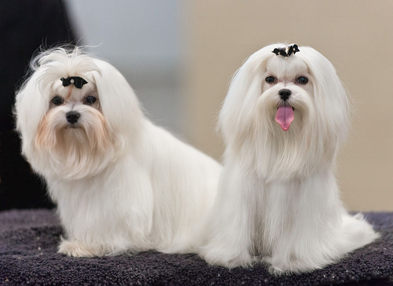
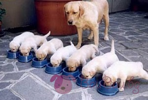
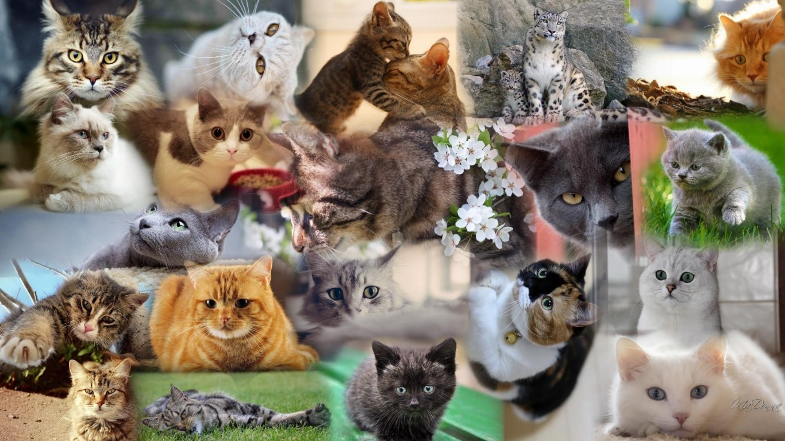

Притежаването на кученце е една от най-големите радости в живота, както и голяма отговорност. Ръководство за отглеждане на кученцето ще ви помогне да се ориентирате правилно през първата и най-важна година от живота на кучето. От справяне с първата вечер на кученцето у дома до обучение на кучето на домашните правила тези статии са всичко, което ви трябва за да помогнете на вашето куче да стане невероятно. Read more
Възпитание и здраве на вашето куче.
Полезни съшети за вашето кученце.
Котките са прекрасни домашни любимци, които са в състояние да направят дома по-уютен, а живота по-цветен и интересен. Дори ако не се считате за запален фен на котки, признайте, че ви харесва мисълта да гушкате пухкава и мъркаща писана Read more
Котка в нов дом.

Избор на котка.
Ако живеете в апартамент с неголяма площ и смятате, че не бихте могли да създадете условия за отглеждането на куче, или пък вече имате куче или котка, или някакъв друг домашен любимец, но искате да разширите домакинството си с още един член, то може би идеята да се сдобиете с декоративно зайче вече ви е спохождала. Read more
Да отглеждаш декоративен заек.

Видове декоративни зайчета.